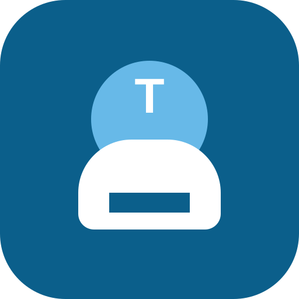

<!doctype html>
<html lang="pt-BR">
<head>
  <meta charset="utf-8">
  <meta name="viewport" content="width=device-width, initial-scale=1, viewport-fit=cover">
  <meta name="theme-color" content="#0b5f8b">
  <meta name="apple-mobile-web-app-capable" content="yes">
  <meta name="apple-mobile-web-app-title" content="Cantina TUFI">
  <meta name="apple-mobile-web-app-status-bar-style" content="default">
  <title>Cantina TUFI iPad</title>
  <link rel="manifest" href="./manifest.webmanifest">
  <link rel="apple-touch-icon" href="./icon.svg">
  <link rel="icon" href="./icon.svg" type="image/svg+xml">
  <link rel="stylesheet" href="./styles.css">
</head>
<body>
  <div class="app-shell">
    <aside class="sidebar">
      <div class="brand">
        
        <div>
          <strong>Cantina TUFI</strong>
          <span>Versao iPad offline</span>
        </div>
      </div>
      <div class="operator-box">
        <span>Operador</span>
        <button id="operatorButton" type="button">Definir operador</button>
      </div>
      <select id="mobileNav" class="mobile-nav"></select>
      <nav id="nav" class="nav"></nav>
      <div class="install-note">
        <b>Instalar no iPad</b>
        <span>Safari > Compartilhar > Adicionar a Tela de Inicio</span>
      </div>
    </aside>
    <main id="main" class="content"></main>
  </div>
  <div id="modalRoot"></div>
  <div id="toast" class="toast"></div>
  <script src="./app.js"></script>
</body>
</html>
